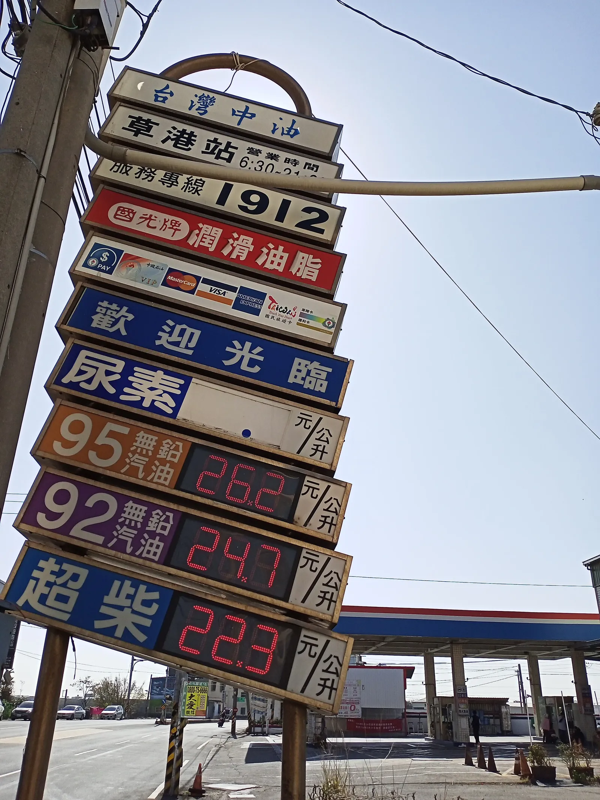
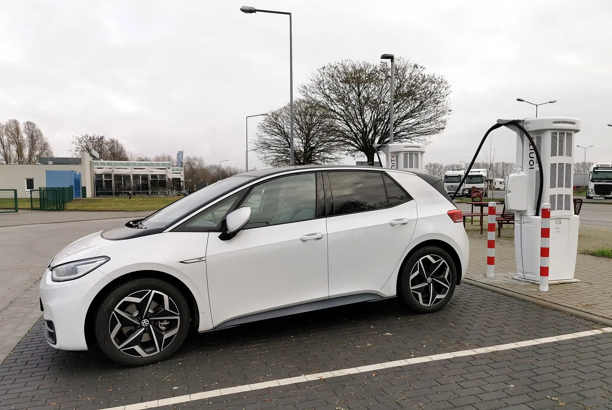
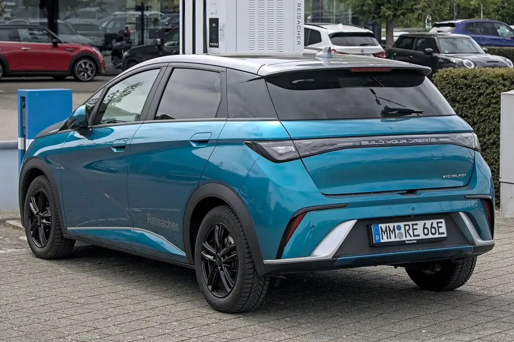
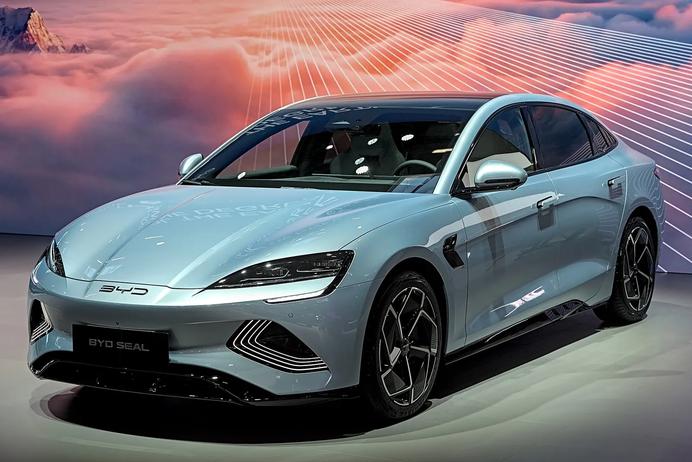
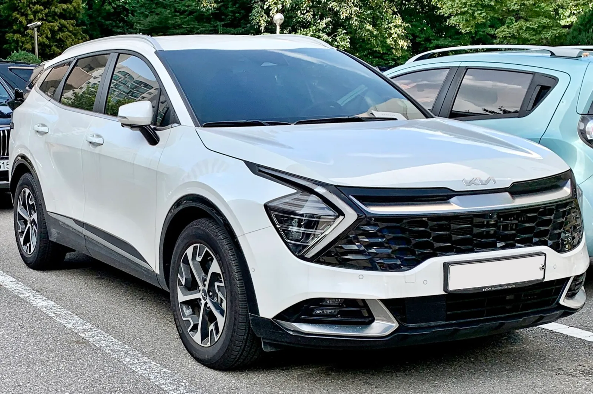
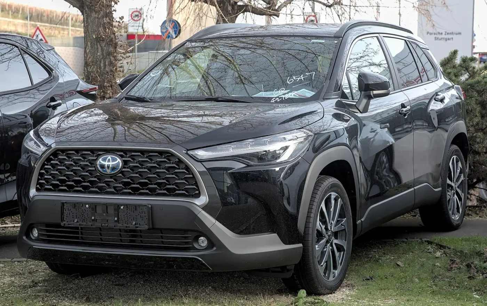
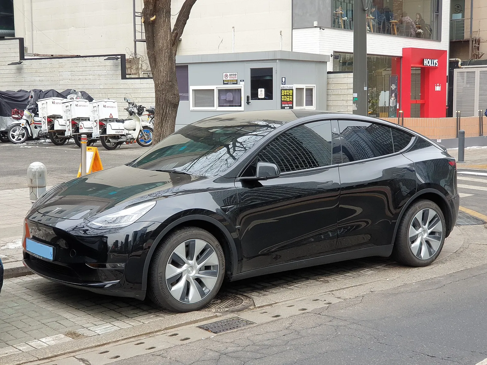
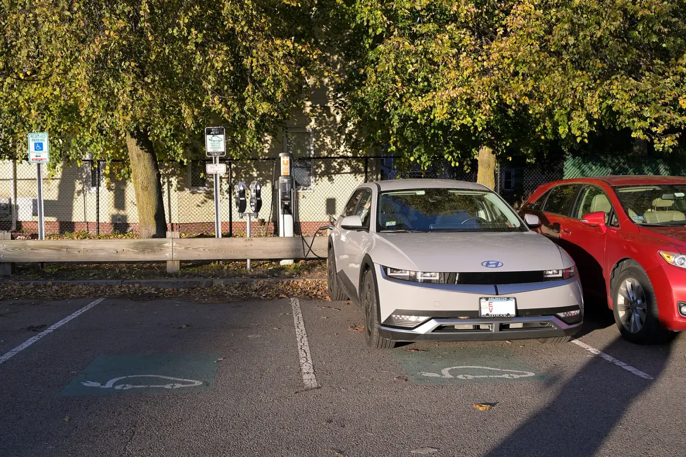
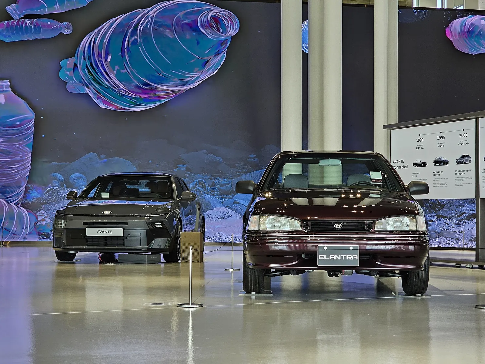

▲ 가솔린을 대신해 늘어난 전동화 모델의 상징, 토요타 프리우스(일본 전시 차량, 파워트레인은 사진으로 확정하지 않음) ⓒ TTTNIS (Wikimedia Commons, CC0)
"가솔린차가 세계 신차 시장에서 처음으로 절반 아래로 내려왔다." 10월 2일 파이낸셜뉴스가 일본 니혼게이자이신문(닛케이) 분석을 인용해 전한 소식이다. 2026년 1~6월 전 세계 신차 판매에서 순수 가솔린차 비중은 49%로, 1920년대 자동차가 보급된 이래 반기 기준 처음 50% 아래로 떨어졌다는 것이다. 이 글은 이 숫자가 어떤 통계이고 무엇을 뜻하는지, 그리고 같은 시기 국내 신차 등록의 연료별 구성은 어떻게 다른지를 따로 정리했다.
전 세계 전기차 흐름 전반은 IEA 글로벌 EV 아웃룩 요약 기사에서 다뤘다. 이 글은 그와 달리 '가솔린 50% 붕괴'라는 한 줄짜리 지표와 한국 비교에만 집중한다.
1. 49%라는 숫자 — 무엇이 "처음"이라는 걸까
파이낸셜뉴스(서혜진 도쿄 특파원, 10월 2일 17:44 입력)는 닛케이가 모빌리티 글로벌 자료를 분석한 결과를 이렇게 전했다. 2026년 1~6월 가솔린차 판매는 전년 동기보다 10% 줄어든 2,025만 대로, 전 세계 신차의 49%였다. 전년 동기 대비 3%포인트 낮아졌다. 서울경제 영문판과 톱기어 필리핀판도 같은 수치(49%, 2,025만 대, EV 17%·687만 대)를 보도했다. 닛케이 아시아 요약 기사는 "1~6월 반기 기준 가솔린차가 세계 신차의 50% 아래로 줄었다"는 큰 틀만 담고 있어 세부 구성비는 확인할 수 없었다.
| 구분 | 보도 수치 | 카프리즘 역산 | 성격 |
|---|---|---|---|
| 순수 가솔린차 | 49%, 2,025만 대, 전년 동기 -10% | 전년 동기 약 52%·약 2,250만 대 | 역산(2,025 ÷ 0.9) |
| 전기차(EV) | 17%, 687만 대, +12% | 전년 동기 약 14%·약 613만 대 | 역산(687 ÷ 1.12) |
| 하이브리드·디젤·기타 | 직접 표기 없음 | 약 34%, 약 1,400만 대 | 역산(100 - 49 - 17) |
| 전체 신차 | 직접 표기 없음 | 약 4,130만 대(2,025 ÷ 0.49) | 반올림 오차 있음, 약 4,090만~4,180만 대 |
📍 "신차 4,130만 대"는 보도 수치가 아니다
전체 모수는 기사에 나오지 않는다. 49%가 반올림값이라 가솔린 2,025만 대에서 역산하면 약 4,090만~4,180만 대 범위로만 말할 수 있다. SBS 영문판과 서울경제 영문판(10월 3일자)은 이 집계가 "일부 대형 차량을 제외한" 전 세계 신차 판매라고 전했고, 톱기어 필리핀판은 "글로벌 승용차 시장"이라고 적었다. 즉 상용·대형차가 일부 빠졌을 가능성이 있지만, 정확히 어떤 차종이 빠졌는지와 소형 상용차가 들어갔는지는 확인하지 못했다.
2. 어느 기관 통계인가 — IEA도 BNEF도 아니다
이번 지표는 흔히 인용되는 IEA(국제에너지기구), 블룸버그NEF, 로 모션 같은 전기차 전문 집계가 아니다. 파이낸셜뉴스는 출처를 "자동차산업 분석기관 모빌리티 글로벌"로, 서울경제 영문판은 "닛케이, 글로벌 모빌리티 자료 인용"으로 적었다. 분석가는 모빌리티 글로벌의 가와노 요시아키로 소개됐다. 검색 결과에서는 가와노 요시아키가 S&P Global Mobility의 일본·한국 판매 전망 담당으로 소개돼 같은 기관일 가능성이 있으나, 해당 소개 페이지를 직접 열지 못해(접속 거부) 보도가 말한 "모빌리티 글로벌"과 동일 기관이라고 확정하지는 않는다. 원문 보고서를 공개했는지도 확인하지 못했다. 닛케이 원문은 열람하지 못했고, 한국어·영어 2차 보도 간 수치가 일치하는 것만 확인했다.
| 항목 | 내용 | 확인 수준 |
|---|---|---|
| 가솔린 49%·EV 17% | 닛케이 분석, 모빌리티 글로벌 자료 | 복수 매체 일치, 원문 미확인 |
| 유럽 EV·가솔린 비교 | ACEA(유럽자동차공업협회) 통계, 유럽 주요 31개국(파이낸셜뉴스 표기) | 파이낸셜뉴스 인용 |
| 기간 | 2026년 1~6월, 전년 동기 대비 | 명확 |
| 가솔린 정의 | 하이브리드 제외(서울경제 영문판) | 순수 가솔린으로 이해 |
| '5년 전 73%' 비교 | 서울경제 영문판(10월 3일자)·SBS 영문판·news.az에 "2021년 73%"가 있고, 서울경제는 "5년간 24%p 하락"이라고 적음 | 영문 보도 3건에서 확인, 파이낸셜뉴스·닛케이 아시아 요약에서는 못 봄. 연간(2021)과 반기(2026 상반기)를 잇는 비교 |

▲ 주유소 앞 유가 표지판(대만 CPC 차오강 주유소). 보도는 고유가가 가솔린 수요 이탈 요인이라고 짚었다 ⓒ Kai3952 (Wikimedia Commons, CC BY-SA 4.0)
3. 왜 지금 꺾였나 — 보도가 꼽은 이유와 한계
닛케이는 이유로 중동 정세 등 국제 상황에 따른 고유가와 연료 공급 불안을 지목했다. 모빌리티 글로벌의 가와노 분석가는 "보조금 중단으로 2024년께부터 전기차 보급 속도가 둔화해 하이브리드가 늘었지만, 고유가로 전기차의 낮은 유지비가 다시 평가받고 있다"고 분석했다. 서울경제 영문판은 BloombergNEF 자료를 인용해 전기차 배터리 팩 평균 가격이 지난해 kWh당 99달러였고 2022년보다 28.3% 낮아졌다고 소개했다. 이 중 99달러는 BNEF가 2025년 12월 9일 낸 배터리 가격 조사 보도자료에서 확인됐다. 전기차(BEV) 팩 평균이 kWh당 99달러이고, 모든 용도를 합친 평균은 108달러(전년 대비 -8%)라는 구분이다. 다만 "2022년 대비 28.3% 하락"은 이 보도자료에서 확인하지 못했다.
📍 가솔린이 줄어든 만큼 전기차가 늘었을까
카프리즘의 역산으로는 EV 비중이 약 14%에서 17%로 3%포인트 오르고, 가솔린은 약 52%에서 49%로 3%포인트 내렸다. 그러면 하이브리드·디젤 등 나머지는 약 34%로 거의 그대로다. 다만 전체 신차가 약 4,330만 대에서 약 4,130만 대로 줄었다는 계산이 나오는데(약 -5%), 이는 반올림 값끼리 나눈 결과이므로 방향성만 참고해야 한다. 즉 "가솔린 이탈의 수혜는 대부분 전기차"라는 해석이 가능하지만 보도에서 직접 확인된 문장은 아니다.
가솔린 49%의 '숫자 위치' — 반올림 오차와 판매량 브리지
49%는 반올림된 값이라 같은 2,025만 대라도 전체 신차는 약 4,090만 대(49.5%일 때)에서 4,180만 대(48.5%일 때) 사이다. 즉 "50% 아래"라는 결론은 유지되지만, 아래 판매량 브리지는 어디까지나 방향을 보는 용도다. 계산식은 전년 가솔린 = 2,025만 ÷ 0.9, 전년 EV = 687만 ÷ 1.12, 전년 전체 = 전년 가솔린 ÷ 0.52(52%는 49%+3%포인트 역산)이며, 올해 전체 = 2,025만 ÷ 0.49다. 카프리즘이 node로 검산했다.
| 구분 | 전년 동기(역산) | 2026 상반기 | 증감 |
|---|---|---|---|
| 순수 가솔린 | 약 2,250 | 2,025(보도) | 약 -225 |
| 전기차 | 약 613 | 687(보도) | 약 +74 |
| 그 외(HEV·PHEV·디젤 등) | 약 1,464 | 약 1,421 | 약 -43(오차 범위 안, 사실상 보합 가능) |
| 전체 | 약 4,327 | 약 4,133 | 약 -194(약 -4.5%) |
해석은 조심스럽다. 가솔린이 약 225만 대 줄어든 반면 전기차 증가분은 약 74만 대로, 줄어든 가솔린의 약 33%만 전기차가 채운 셈이다. 나머지는 하이브리드 등으로의 이동과 시장 자체의 위축이 섞였을 수 있는데, 이 둘을 가르는 숫자는 보도에 없다. 위 4.5% 감소는 반올림 값끼리 나눈 역산이어서 실제 시장 위축 폭으로 읽으면 안 된다. 또 5년 평균 하락폭은 24%포인트 ÷ 5년으로 연 4.8%포인트인데, 최근 1년 하락폭은 3%포인트로 더 작다. 연간과 반기 비교라 계절성이 섞이므로 "하락 속도가 느려졌다"고 단정할 근거는 아니다.

▲ 독일 도로변 급속충전기 옆에 선 폭스바겐 ID.3(독일 촬영). 보도에서 유럽 EV는 181만 대, 전년 대비 +32%였다 ⓒ Peter Kersten (Wikimedia Commons, CC BY-SA 4.0)
4. 지역별로 보면 — 중국과 유럽이 끌어내렸다
| 지역 | 전기차 | 가솔린차 | 비고 |
|---|---|---|---|
| 중국 | 344만 대, -3% | -26% | 전 세계 EV의 약 50%(344 ÷ 687, 역산) |
| 유럽 | 181만 대, +32% | -13% | ACEA: 주요 31개국 EV가 처음으로 가솔린 추월 |
| 동남아 | 35만 대, +81% | 보도 없음 | - |
| 오세아니아 | 11만 대, 전년의 2.2배 | 보도 없음 | - |
| 북미 | -15% | 보도 없음 | 판매량 수치는 확인 못 함 |
중국에서 EV가 3% 줄었는데도 가솔린이 26%나 빠진 것은 하이브리드·EREV 등 다른 동력으로 옮겨 간 수요가 있다는 신호일 수 있다. 다만 중국 신에너지차 구성은 이번 보도에 나오지 않으며, 이는 카프리즘의 추정이다. 중국 신차 가격 경쟁과 세제 변화는 중국 NEV 구매세 5% 전환 기사에서, 8월 유럽·북미 전기차 판매 엇갈림은 유럽 +36%·북미 -33% 기사에서 확인할 수 있다.
지역별 EV 증감 역산 — 누가 늘리고 누가 줄였나
| 지역 | 2026 상반기 EV | 세계 EV 중 비중 | 전년 동기(역산) | 증감 | 가솔린 증감(보도) |
|---|---|---|---|---|---|
| 중국 | 344 | 약 50.1% | 약 354.6 | 약 -10.6 | -26% |
| 유럽 | 181 | 약 26.3% | 약 137.1 | 약 +43.9 | -13% |
| 동남아 | 35 | 약 5.1% | 약 19.3 | 약 +15.7 | 보도 없음 |
| 오세아니아 | 11 | 약 1.6% | 약 5.0 | 약 +6.0 | 보도 없음 |
| 북미·기타(합산 역산) | 약 116 | 약 16.9% | 약 97.3 | 약 +18.7 | 보도 없음(북미 EV -15%, 수량 불명) |
| 합계 | 687 | 100% | 약 613.4 | 약 +73.6 | -10%(세계) |
| (참고) 한국 | 약 19.9(국토부 신규등록 기준, 기타에 포함) | 약 2.9% | 약 9.3(KAMA +113.6%로 역산) | 약 +10.6 | 휘발유 약 -16.9%(국토부 33.2만→27.6만) |
계산식은 전년 = 올해 ÷ (1 + 증감률)이다(오세아니아는 2.2배). 중국은 세계 EV의 절반을 차지하지만 올해 증감은 마이너스라서, 세계 EV 증가분(약 74만 대)은 유럽(+44만)과 동남아(+16만)가 거의 다 만들었다. 중국에서 EV가 줄었는데 가솔린이 26% 더 크게 줄었다면 하이브리드·EREV 등 다른 동력으로의 이동이 있었다는 신호일 수 있으나, 이는 추정이다. 한국의 EV 증가분 약 10.6만 대는 전체 증가분의 약 14%에 해당하는데, 한국 신규등록 총량이 세계 신차의 약 2%에 불과한 점을 생각하면 증가 기여가 큰 편이다. 다만 한국 값은 판매가 아닌 등록 통계이고 전년 역산도 KAMA 증감률을 국토부 수치에 맞춘 것이라 근사값이다. 북미 EV 판매량과 지역별 연료 구성비(가솔린·HEV·PHEV 비중)는 보도에 없어 비교표에 넣지 못했다.

▲ BYD 돌핀의 후면과 측면(독일 번호판 차량). 중국 EV 업체의 소형 모델은 유럽 도로에서도 보인다 ⓒ Alexander-93 (Wikimedia Commons, CC BY-SA 4.0)

▲ 중국산 전기차의 대표 주자 BYD 씰(2023 IAA 전시 차량) ⓒ Alexander-93 (Wikimedia Commons, CC BY-SA 4.0)
5. 한국은 어떤가 — 순수 가솔린은 이미 3분의 1
한국은 세계 평균과 출발점이 다르다. 국토교통부 6월 말 자동차 등록 통계에 따르면 2026년 상반기 신규등록은 85만7,404대였다. 보도에 인용된 연료별 신규등록은 하이브리드 29만2천 대, 휘발유 27만6천 대, 전기 19만9천 대, LPG 6만3천 대, 경유 2만1천 대, 수소 3천 대 순이다(천 단위 반올림). 카프리즘이 이 숫자로 비중을 계산하면 다음과 같다.
| 연료 | 등록대수(천 단위) | 비중(계산) | 비고 |
|---|---|---|---|
| 하이브리드 | 약 29.2만 대 | 약 34.1% | KAMA 28만9,814대 34.1%와 일치 |
| 휘발유 | 약 27.6만 대 | 약 32.2% | 276 ÷ 857.4 |
| 전기 | 약 19.9만 대 | 약 23.2% | 국토부 발표 "23%", KAMA 23.3% |
| LPG | 약 6.3만 대 | 약 7.3% | - |
| 경유 | 약 2.1만 대 | 약 2.4% | KAMA: 경유 전년 대비 -59.5% |
| 수소 | 약 0.3만 대 | 약 0.4% | KAMA 3,175대 0.4% |
| 합계(표기분) | 약 85.4만 대 | 약 99.6% | 나머지 약 0.4%는 반올림·기타(항목 미확인) |
한국자동차모빌리티산업협회(KAMA)는 8월 4일 상반기 신규등록 85만636대(+1.3%), 하이브리드 28만9,814대(34.1%), 전기 19만8,509대(23.3%, +113.6%), 수소 3,175대(0.4%)로 친환경차 비중이 57.8%(전년 46.1%), 순수 내연기관 42.0%(전년 53.7%)라고 발표했다. 국토부 표에서 휘발유·LPG·경유를 합산하면 36만 대로 42.0%가 되어 두 통계가 맞아떨어진다. 두 기관의 총 등록대수가 85만7,404대와 85만636대로 약 0.8% 다른 이유는 집계 범위의 차이로 보이지만 확인하지는 못했다.
한국 전년 동기 대비 — 휘발유 비중이 7%포인트 빠졌다
| 연료 | 2025 상반기 | 2026 상반기 | 비중 변화 |
|---|---|---|---|
| 휘발유 | 약 33.2만 대(약 39.2%) | 약 27.6만 대(약 32.2%) | 약 -7.0%포인트(대수 -16.9%) |
| 하이브리드 | 약 29.4만 대(약 34.8%) | 약 29.2만 대(약 34.1%) | 약 -0.7%포인트(사실상 보합) |
| 전기 | 약 9.3만 대(역산) | 약 19.9만 대(약 23.2%) | KAMA 증가율 +113.6% |
| 전체 신규등록 | 84만5,913대 | 85만7,404대 | 약 +1.4% |
계산식은 비중 = 연료별 대수 ÷ 전체 신규등록이다. 2025년 상반기 수치는 국토부 2025년 6월 말 통계를 전한 보도(위키트리)에서 확인한 총 84만5,913대, 휘발유 33만2천 대, 하이브리드 29만4천 대이며 천 단위 반올림이라 비중은 약 ±0.06%포인트 오차가 있다. 같은 시기 세계 가솔린 비중은 3%포인트 내렸으니, 한국은 1년 사이 그보다 두 배 이상 빠르게 휘발유 비중이 줄었다. 하이브리드는 보합이라 휘발유가 내준 자리는 전기차(약 +12%포인트)가 거의 채웠다는 계산이 나온다. 다만 하이브리드에 PHEV가 어떻게 분류됐는지는 보도에 없고, 2025년 전기·LPG·경유 개별 대수는 직접 확인하지 못해 표에 넣지 않았다(전기는 KAMA 증가율로 역산).
국토부와 KAMA, 왜 숫자가 다른가
| 항목 | 국토교통부(보도) | KAMA | 차이 |
|---|---|---|---|
| 전체 | 85만7,404대 | 85만636대 | 약 +6,770대(+0.8%) |
| 전기 | 19만9,019대 | 19만8,509대 | 약 +510대(+0.3%) |
| 하이브리드 | 약 29.2만 대(천 단위) | 28만9,814대 | 약 +2,200대(+0.8%) |
| 내연기관(휘발유·LPG·경유) | 약 36.0만 대(천 단위 합산) | 약 35.7만 대(42.0% × 85만636) | 약 +2,700대(+0.8%) |
차이는 특정 연료에 몰리지 않고 전반에 약 0.8% 비슷하게 퍼져 있다(전기만 0.3%). 이는 연료별 분류 차이보다 집계 범위나 기준 시점의 차이일 가능성을 시사하지만, 카프리즘이 두 기관의 산출 기준 문서를 직접 확인하지 못했으므로 원인은 단정하지 않는다. 천 단위 반올림(±500대)을 감안해 읽어야 한다. 국토부 보도는 신규등록을 "새로 등록된 자동차"로만 설명한다.
📍 신규 판매 42%와 도로 위 85%는 다르다
같은 국토부 6월 말 통계에서 누적 등록 2,667만6천 대 중 내연기관(휘발유·경유·LPG)은 2,254만4천 대로 약 84.5%(22,544 ÷ 26,676)다. 친환경차는 395만3천 대(약 14.8%)이고 그중 전기차는 109만5천 대(4.1%)다. 신규등록에서는 내연기관이 42.0%(KAMA)까지 내려왔지만, 이미 굴러다니는 차의 구성이 바뀌는 데는 훨씬 오래 걸린다. 세계 통계도 마찬가지로 "신차 판매 49%"는 "보유 차량 49%"가 아니다.
한국 시장의 최근 흐름은 2027년 전기차 보조금 예산 확대 기사와 주유비 절감 비교 기사에서도 이어서 볼 수 있다.

▲ 국내 신차 등록에서 가장 큰 비중을 차지한 하이브리드의 대표 SUV, 기아 스포티지 하이브리드 ⓒ Benespit (Wikimedia Commons, CC BY-SA 4.0)
6. 세계 vs 한국 — 같은 잣대로 놓으면
| 구분 | 세계 | 한국 | 차이(한국-세계) |
|---|---|---|---|
| 순수 가솔린(휘발유) | 49% | 약 32.2% | 약 -16.8%포인트 |
| 전기차 | 17% | 약 23.2% | 약 +6.2%포인트 |
| 그 외(HEV·PHEV·디젤·LPG 등) | 약 34%(역산) | 약 44.6%(계산: 100 - 32.2 - 23.2) | 약 +10.6%포인트 |
| 순수 가솔린의 전년 비중 | 약 52%(역산) | 약 39.2%(국토부 2025 상반기 휘발유 33.2만 ÷ 84.6만, 내연기관 합계는 KAMA 53.7%→42.0%) | 세계 -3%포인트 vs 한국 약 -7.0%포인트 |
한국은 가솔린 비중이 세계 평균보다 약 17%포인트 낮고, 전기차는 약 6%포인트 높다. 하이브리드가 가장 큰 단일 연료인 점도 세계와 다르다. 이유로는 디젤의 급감(국내 디젤 93% 감소 기사)과 하이브리드 확대를 꼽을 수 있지만, 연료별 증감의 인과관계는 이번 통계만으로 단정하기 어렵다. 하이브리드·PHEV·EREV 선택 기준은 HEV·PHEV·EREV 판정표 기사에서 정리했다.

▲ 토요타 코롤라 크로스 하이브리드(독일 촬영, 사진 파일명 기준이며 파워트레인은 외관으로 확정하지 않음). 세계 신차의 나머지 약 34%에는 이런 하이브리드가 포함됐을 것으로 보이나 세부 구성은 보도에 없다 ⓒ Alexander Migl (Wikimedia Commons, CC BY-SA 4.0)
📍 비교할 때 주의할 점
세계 수치는 "전 세계 신차 판매", 한국 수치는 "신규등록"이다. 한국은 법인·렌터 구매 비중이 34.9%(KAMA)로 높고 수입차가 22.7%를 차지하는 점도 구성에 영향을 줄 수 있다. 세계 "전기차 17%"에 PHEV가 들어갔는지는 확인하지 못했다. IEA는 PHEV를 전기차에 포함하지만 이번 보도의 정의는 알 수 없다. 포함이라면 한국 EV 23%와의 격차 해석이 달라진다. 서울경제 영문판은 한국의 1~8월 EV 판매를 산업통상부 발표라며 26만8,092대(+90.2%)·점유율 24.4%(전년 12.8%)로 전했으나, 원 자료와 월별 연료 구성 통계는 찾지 못해 이 글의 계산에는 쓰지 않았다.

▲ 한국의 전기 택시 충전소(경기도). 한국은 신차 중 전기차 비중이 23%대로 세계 평균 17%보다 높다 ⓒ GTV경기도청방송국 (Wikimedia Commons, CC BY 3.0)
7. 이 숫자가 한국 운전자에게 뜻하는 것
첫째, 세계 신차 시장의 "기본값"이 가솔린에서 다른 동력으로 넘어갔다는 상징성이 크다. 다만 전 세계에 이미 굴러다니는 차 중 가솔린차 비중이 절반 아래가 됐다는 뜻은 아니다. 신차 판매 기준일 뿐이다. 둘째, 한국은 이미 앞서 있어 "가솔린 50% 붕괴"가 새 소식이라기보다 세계가 한국을 따라오는 흐름에 가깝다. 이는 카프리즘의 해석이며 한국 구성비가 세계의 선행 지표라는 근거는 확인하지 못했다.
| 항목 | 확인 방법 | 참고 |
|---|---|---|
| 연료별 신규등록 | 국토교통부 자동차 등록 통계(월간), KAMA·KAIDA 월간 보도자료 | KAIDA는 수입차 중심 |
| 본인 차급의 파워트레인 선택지 | 제조사 공식 가격표 | 트림별로 가솔린·HEV·EV 혼재 |
| 중고차 잔존가치 | 엔카·K카 시세 | 고유가 국면에서 수요 변화 가능성(추정) |

▲ 국내 전기차 신규등록 급증을 이끈 수입 전기차 중 하나인 테슬라 모델 Y(한국 내 촬영 사진으로 알려짐, 정확한 장소는 확인하지 않음) ⓒ Damian B Oh (Wikimedia Commons, CC BY-SA 4.0)
✅ 읽을 때 체크포인트
- "가솔린 49%"는 하이브리드를 뺀 순수 가솔린이며, 기간은 2026년 상반기다
- 출처는 닛케이가 인용한 모빌리티 글로벌 자료로, IEA·BNEF 통계가 아니다
- 나머지 34%는 보도에 없고 카프리즘 역산이다
- 한국 비교는 신규등록 통계이고, 세계는 판매량이라 기준이 다르다
8. 아직 확인하지 못한 것
| 항목 | 상태 |
|---|---|
| 닛케이 원문·모빌리티 글로벌 원 보고서 | 직접 열람하지 못함(닛케이 검색 결과에서도 해당 기사 확인 불가) |
| 모빌리티 글로벌과 S&P 글로벌 모빌리티의 동일 여부 | 분석가 소속만 검색 결과로 확인, 동일 기관 여부는 확정 못 함 |
| 세계 HEV·PHEV·디젤 개별 비중 | 영문·한국어 보도 모두 없음(역산 34% 합계만, 하이브리드는 "강세 유지"라고만 언급) |
| 집계 모집단 | "일부 대형 차량 제외"까지만 확인, 상용차 포함 범위 불명 |
| BNEF "2022년 대비 -28.3%" | 보도자료에서 확인 못 함(99달러 자체는 확인) |
| 한국 1~8월 EV 26만8,092대·24.4%·월별 연료 비중 추이 | 원 자료 확인 못 함, 월별 연료 구성은 국토부·KAMA에서 찾지 못해 추이표 생략 |
| EV 17%의 PHEV 포함 여부 | 확인 못 함 |
| 한국 전년 동기 순수 가솔린 비중 | 국토부 보도 기준 약 39.2%로 확인(2025년 전기·LPG·경유 개별 대수는 미확인) |
| 국토부·KAMA 총 등록대수 차이(85만7,404대 vs 85만636대) | 연료별로 약 0.8%씩 고르게 차이(전기 0.3%), 원인 문서는 확인 못 함 |

▲ 충전 구역에 정차한 아이오닉 5(미국 촬영). 전기차 보급의 관건은 충전 환경이다 ⓒ 4300streetcar (Wikimedia Commons, CC BY 4.0)
전기차 이탈 흐름은 국산 전기차 안방 점유율 하락 기사, 세계 전기차 판매 순위는 현대차그룹 세계 전기차 순위 기사에서 볼 수 있다.

▲ 전시장에 나란히 놓인 구형 엘란트라(아반떼)와 신형 모델. 가솔린이 기본이던 시대의 상징이다(구체 연식·사양은 확정하지 않음) ⓒ Damian B Oh (Wikimedia Commons, CC BY-SA 4.0)
자주 묻는 질문
| 질문 | 답 |
|---|---|
| 하이브리드는 가솔린 49%에 들어가나? | 아니다. 영문 보도는 하이브리드 등 전동화 차량을 제외한 순수 가솔린차라고 적었다. 하이브리드의 세계 개별 비중은 보도에 없다. |
| 세계 가솔린차가 절반 아래라는 건 보유 차량 기준인가? | 아니다. 상반기 신차 판매 기준이다. 한국만 봐도 누적 등록 중 내연기관은 약 84.5%다. |
| 한국은 왜 비교에서 다르게 나오나? | 한국 휘발유 약 32.2%는 국토부 신규등록 기준이라 세계 판매량과 정의가 다르고, 법인·렌터 구매(34.9%)와 수입 전기차 유입이 구성에 영향을 줬을 수 있다(추정). |
| 배터리값 99달러는 어떤 값인가? | BNEF 2025년 조사의 전기차(BEV) 팩 평균이다. 전 용도 평균은 108달러/kWh이며, 차 가격에 그대로 반영되는 값은 아니다. |
9. 요약
2026년 상반기 전 세계 신차 중 순수 가솔린차는 49%(2,025만 대, -10%)로 처음 50% 아래로 내려갔다. 닛케이가 모빌리티 글로벌 자료를 분석한 보도이며, 전기차는 17%(687만 대, +12%)다. 나머지 약 34%는 카프리즘 역산이다.
중국 가솔린 -26%, 유럽 -13%가 주도했고, 고유가가 배경으로 꼽혔다. 같은 시기 한국 신규등록은 하이브리드 34.1%, 휘발유 약 32.2%, 전기 약 23.2%로 순수 가솔린 비중이 세계보다 약 17%포인트 낮다.
다만 기준이 다르다. 세계는 판매 통계, 한국은 신규등록이며 원 통계의 세부 모집단(일부 대형 차량 제외)과 PHEV 분류는 확인하지 못했다. 한국은 1년 새 휘발유 비중이 약 39%에서 32%로 빠졌다(국토부 보도 기준).